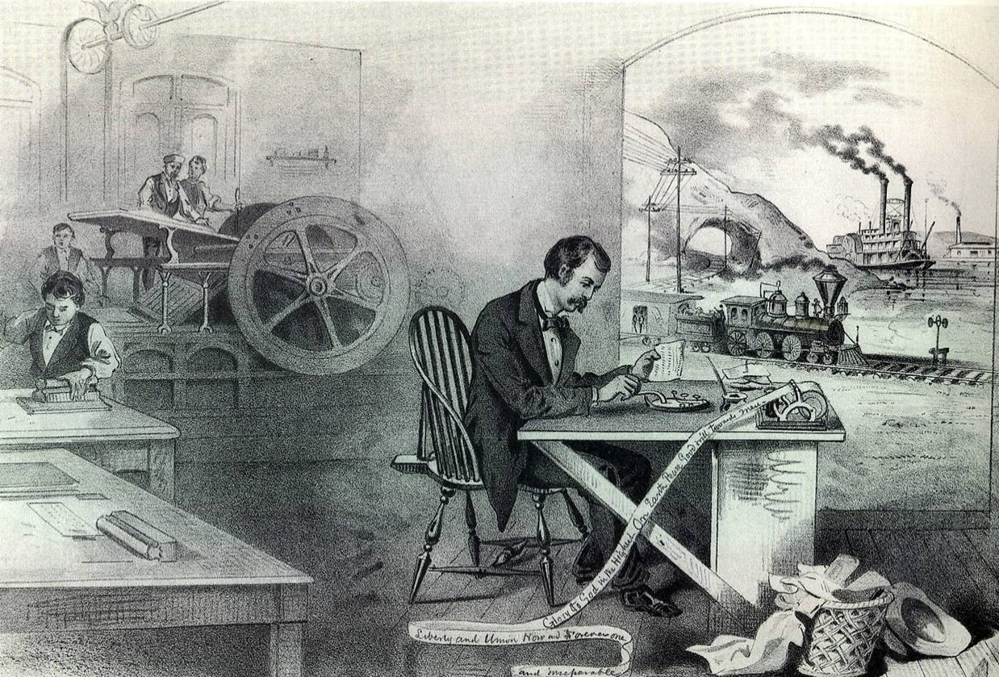
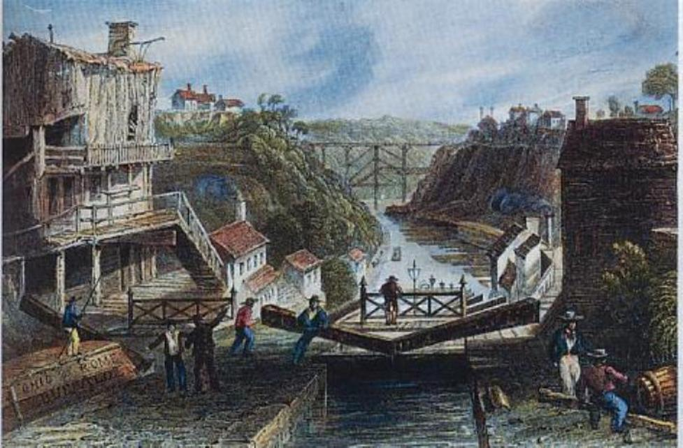
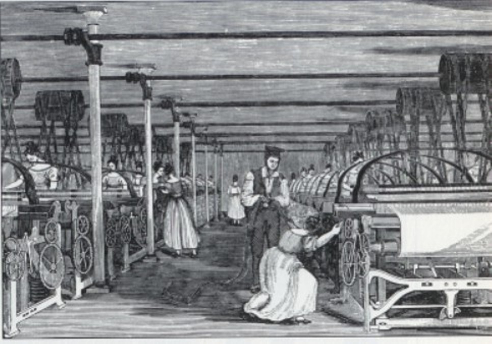

Understand how the market revolution occurred: what factors led to this economic overhaul
Understand the effects the market revolution had on society
For further reading: 14.7 - "Creeping Mechanization", 14.8 - "Whitney Ends the Fiber Famine", and 14.9 - "Marvels in Manufacturing"
For further reading: 14.10 - "Workers and Wage Slaves", 14.11 - "Women and the Economy", and 14.8 - "The Market Revolution"